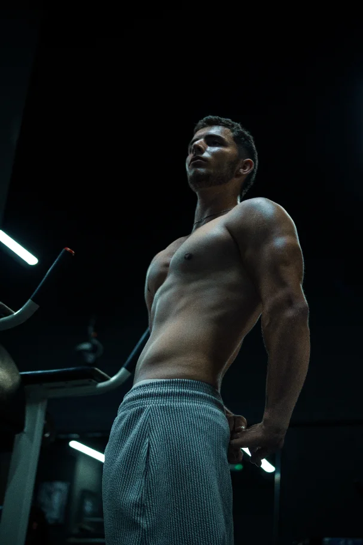
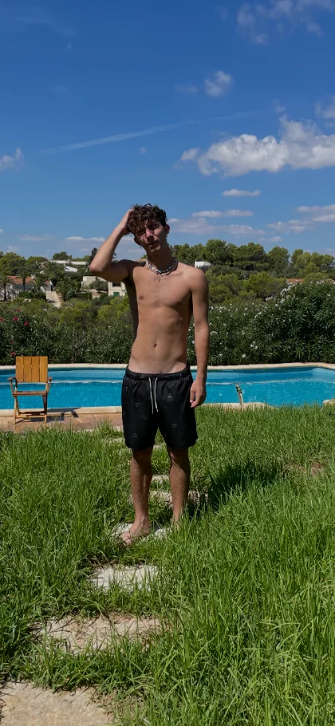
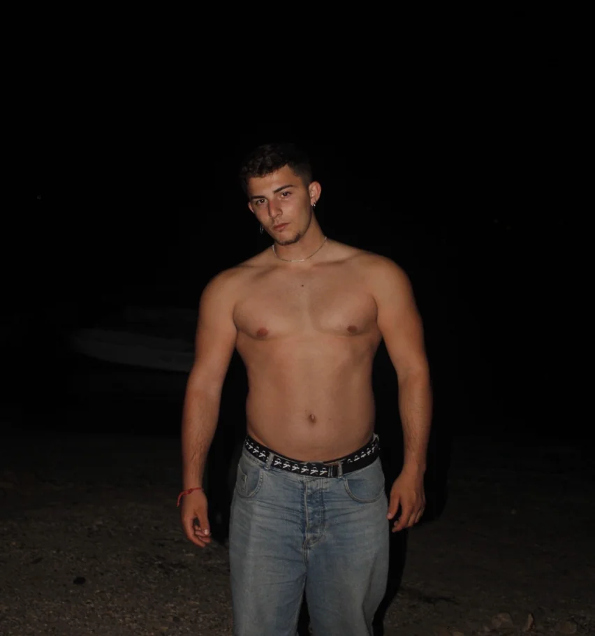
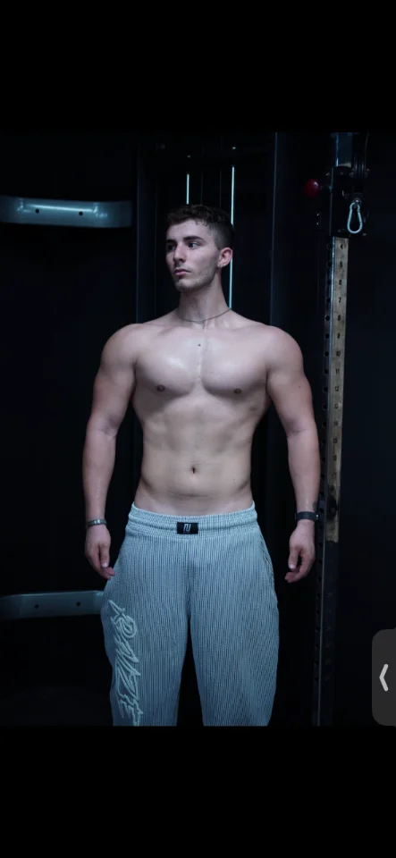
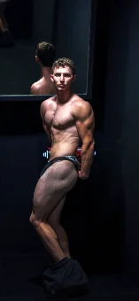
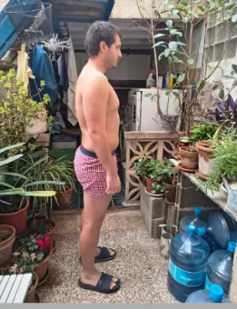
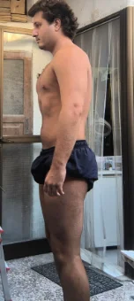
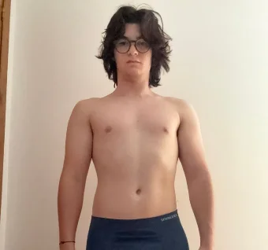

Llevo años diciendo que empiezo el lunes.
Una cena, un viaje, una semana mala. Y pasa otro mes sin que nada cambie.

Método Kaizen · Hombres de 25 a 45 años
Kaizen es un método de pérdida de grasa con entrenamiento y alimentación adaptados a tu vida y seguimiento 1 a 1. Pequeñas mejoras cada semana, sin dietas extremas y sin volver a empezar cada lunes.
¿Te suena?
No necesitas identificarte con todo. Con una sola frase ya sabes de qué hablamos.
Llevo años diciendo que empiezo el lunes.
Una cena, un viaje, una semana mala. Y pasa otro mes sin que nada cambie.
Lo he probado todo y nada me ha durado.
Dietas de internet, apps, rutinas de YouTube. Arrancas con energía y en tres semanas estás donde empezaste.
Ya no me reconozco en el espejo.
La ropa no te sienta igual, evitas las fotos y quitarte la camiseta en la playa. Y te estás acostumbrando a vivir así.
Pagué a un entrenador y desapareció.
Un PDF o un Excel el primer día y no volviste a saber de él. Pagaste por un plan y te quedaste solo con un archivo.
Entreno, pero ya no avanzo.
Mismos pesos desde hace meses, menos energía y la sensación de estar estancado por mucho que lo intentes.
Hay tanta información que no sé qué hacer.
¿Cardio o pesas? ¿Ayuno o cinco comidas? Cada cuenta dice lo contrario y esa parálisis te deja donde estás.
El problema no son tus ganas. Es que nadie te ha dado un sistema que encaje en tu vida.
Quiero cambiarloPor qué existe Kaizen
Fui el flaco al que nadie tomaba en serio en el gimnasio. En un año pasé de 65 a 95 kg: entrenaba, pero descuidé la alimentación y el peso se disparó. No era el físico que buscaba. Era grasa, y me miraba al espejo sin reconocerme.
Entonces entendí que el problema no era la falta de ganas, sino la falta de un método adaptado a mí. Me formé en biomecánica, anatomía, fisiología y ciencia del entrenamiento, con el CPE de Fit Generation, y sigo formándome hoy.
De ese proceso nació Kaizen: el sistema que me permitió dejar de improvisar y que hoy aplico con cada cliente.
David Alzas



El mecanismo
La diferencia no está en la intensidad. Está en si dentro de un año sigues manteniéndolo.
Todo o nada
Mejor cada semana
Así funciona Kaizen
No hay un plan rígido idéntico para todos. Hay un proceso de cinco etapas, y dentro de ese proceso está tu plan.
Antes de darte un plan, entendemos tu situación: objetivos, horarios, experiencia, alimentación, hábitos, lesiones e historial deportivo.
Por qué dura: partimos de tu realidad, no de un plan genérico.
Con ese análisis construimos tu estrategia de entrenamiento y alimentación.
Por qué dura: adaptamos el plan a tu vida, no tu vida al plan.
Hacemos cambios realistas, uno detrás de otro, que puedes mantener entre trabajo, familia y vida social.
Por qué dura: sin cambios bruscos no hay efecto rebote que te devuelva al punto de partida.
Revisamos tu evolución con métricas, fotos y formularios. Lo que funciona se queda; lo que no, se cambia.
Por qué dura: decides con datos, no con la báscula de un mal día.
Los cambios mantenidos acaban generando una transformación física y también de hábitos.
Por qué dura: llegas arriba sabiendo cómo mantenerte.
Resultados

“Pasé de entrenar sin rumbo y frustrarme por no ver cambios a entender cómo transformar mi físico de verdad. Por eso creé Kaizen.”


“Por mi trabajo y mis horarios pensaba que bajar grasa era casi imposible. Entendí que no necesitaba hacerlo perfecto: necesitaba un plan adaptado a mi vida.”

“Entre la universidad, el teatro y el trabajo pensaba que era imposible mejorar mi físico. He perdido grasa y he comprobado que se puede avanzar con poco tiempo.”
Fotos y testimonios publicados con permiso de cada persona. Los resultados dependen del punto de partida, la constancia y el contexto de cada uno; no prometemos cifras ni plazos.
El acompañamiento
No es un PDF y adiós. Es un proceso en el que no vas solo.
Formulario y llamada de valoración para conocer tu punto de partida, tu agenda y lo que ya has probado.
Diseñado según tu nivel, los días que tienes y el material del que dispones.
Sin prohibiciones ni menús imposibles: adaptada a tus gustos, tus horarios y tus comidas fuera.
Métricas, fotos y formularios para medir tu evolución de forma objetiva.
En cada revisión ajustamos entrenamiento y nutrición según cómo respondes.
Hablas directamente con David para resolver dudas y no quedarte atascado.
Antes de aplicar
Dudas frecuentes
¿Tienes otra duda? Escríbela en el formulario y la vemos en la llamada.
Sí. El plan se construye a partir del tiempo que tienes de verdad, no del que deberías tener. Ivan y Juan Pablo tenían trabajo, estudios y horarios cambiantes, y avanzaron igualmente.
Porque no dependes de la motivación. Kaizen se basa en cambios pequeños que puedes mantener, revisiones periódicas y ajustes cuando algo no funciona. Y no lo haces solo.
No. Para perder grasa hace falta comer algo menos de lo que gastas de forma sostenida, y eso se consigue con comida normal que te guste. Sin prohibir grupos de alimentos ni pasar hambre.
Depende de tu situación y del acompañamiento que necesites. Te lo explico en la llamada de valoración, una vez sepamos si Kaizen encaja contigo. La llamada no tiene compromiso.
Es parte de la vida real y lo tenemos en cuenta. Aprendes a gestionar comidas fuera, viajes y semanas complicadas, y en cada revisión adaptamos el plan.
Depende de tu punto de partida y de tu constancia, así que no te voy a prometer plazos. Lo que sí hacemos es medir desde la primera revisión, para que veas con datos si avanzas y ajustemos si no.
Tu primer paso
Rellena el formulario. Reviso tu caso personalmente y, si Kaizen encaja contigo, te contacto para una llamada de valoración.
Si sigues el plan y haces todas tus revisiones durante las primeras 8 semanas y no hay ningún progreso medible, te devuelvo tu dinero.
Te explico las condiciones exactas en la llamada de valoración.No esperes al lunes. No hace falta hacerlo perfecto. Empieza a mejorar.